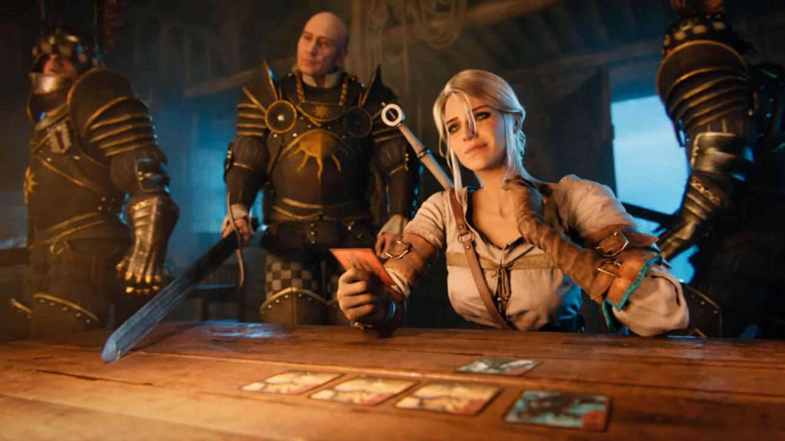

Запуск каталога GameVoice
Привет. Это первый полноценный релиз сайта. Я сделал GameVoice, потому что устал собирать ссылки на переводы и фанатские озвучки по разным форумам, пабликам и файлообменникам. Теперь всё находится в едином открытом месте.
Каталог пополняется регулярно. Если вы знаете русификатор, которого здесь пока нет, или нашли нерабочую ссылку — нажмите на кнопку добавления. Это открывает заявку на GitHub и очень помогает проекту развиваться.
- Поиск и фильтры по типу локализации (текст, озвучка, всё вместе)
- Интерактивный hero-блок с трейлерами и адаптивными постерами
- Сохранение избранных игр локально в браузере
- Удобная форма предложения новых русификаторов через GitHub Issues